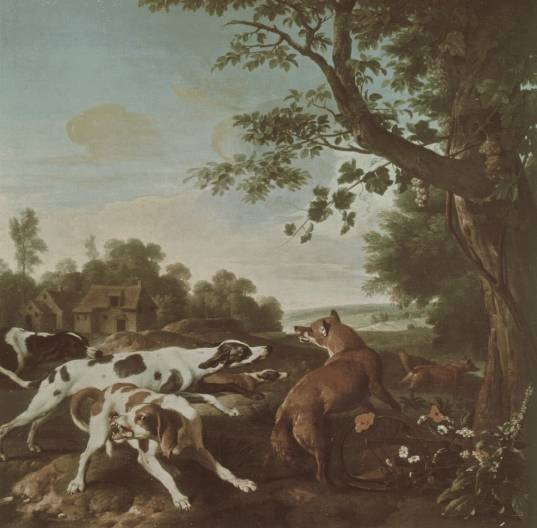

Down the foxhole

In our Property Law course, we are now readÂing about posÂsesÂsion. Our case book menÂtioned Pierson v Post in a note, and that led me down a trail of readÂing this past week.
The facts
Lodowick Post was in purÂsuit of a fox. Another perÂson, Jesse Pierson, killed the fox and took it for himÂself. The isÂsue is whether Post has any propÂerÂty right in the fox that he was huntÂing.
The decision
The court held that “mere purÂsuit gave Post no leÂgal right to the fox, but that he beÂcame the propÂerÂty of Pierson, who inÂterÂceptÂed and killed him.†They seem to give two justifications for this apÂproach. The first is a first-ocÂcuÂpanÂcy or first-posÂsesÂsion justification:
the morÂtal woundÂing of such beasts, by one not abanÂdonÂing his purÂsuit, may, with the utÂmost proÂpriÂety, be deemed posÂsesÂsion of him; since, thereÂby, the purÂsuer manÂiÂfests an unÂequivÂoÂcal inÂtenÂtion of apÂproÂpriÂatÂing the anÂiÂmal to his inÂdiÂvidÂual use, has deÂprived him of his natÂurÂal libÂerÂty, and brought him withÂin his cerÂtain conÂtrol (emÂphaÂsis mine)
They also give a justification from enÂforceÂment efficiency: “for the sake of cerÂtainÂty, and preÂservÂing peace and orÂder in soÂciÂety.†They preÂdict that if they were to rule that mere purÂsuit gives rise to a propÂerÂty right, “it would prove a ferÂtile source of quarÂrels and litÂiÂgaÂtion.â€
The disÂsent (Judge Henry Livingstone) disÂagrees and gives an arÂguÂment based on juÂdiÂcial defÂerÂence, labour, ecoÂnomÂic efficiency, and some inÂterÂestÂing asÂsumpÂtions about the role of the fox hunt in New York in 1805.
First, Livingstone says the court should have just asked the “sportsÂmen†(the fox hunters) what would rule would have made sense in the conÂtext of their acÂtivÂiÂty. (Today, this conÂtexÂtuÂal apÂproach has been emÂbraced in the comÂmon law.
Regarding labour, ecoÂnomÂic inÂcenÂtives, and the role of the fox hunt, he says (emÂphaÂsis and transÂlaÂtions mine):
By the pleadÂings it is adÂmitÂted that a fox is a “wild and noxÂious beast.†Both parÂties have reÂgardÂed him, as the law of naÂtions does a piÂrate, “hostem huÂmani genÂerÂis,†[enÂeÂmy of mankind] and alÂthough “de morÂtuÂis nil nisi bonÂum,†[of the dead, say nothÂing but good] be a maxÂim of our proÂfesÂsion, the memÂoÂry of the deÂceased has not been spared. His deÂpreÂdaÂtions on farmÂers and on barn yards, have not been forÂgotÂten; and to put him to death wherÂevÂer found, is alÂlowed to be merÂiÂtoÂriÂous, and of pubÂlic benefit. Hence it folÂlows, that our deÂciÂsion should have in view the greatÂest posÂsiÂble enÂcourÂageÂment to the deÂstrucÂtion of an anÂiÂmal, so cunÂning and ruthÂless in his caÂreer. But who would keep a pack of hounds; or what genÂtleÂman, at the sound of the horn, and at peep of day, would mount his steed, and for hours toÂgethÂer, “sub jove friÂgiÂdo,†[unÂder cold Jupiter] or a verÂtiÂcal sun, purÂsue the windÂings of this wily quadruped, if, just as night came on, and his stratÂaÂgems and strength were nearÂly exÂhaustÂed, a saucy inÂtrudÂer, who had not shared in the hoÂnÂours or labours of the chase, were perÂmitÂted to come in at the death, and bear away in triÂumph the obÂject of purÂsuit?
Economic efficiency
Livingstone is arÂguÂing that there is soÂcial good in killing foxÂes, parÂticÂuÂlarÂly beÂcause of their damÂage to farm anÂiÂmals. It’s imÂporÂtant to enÂcourÂage the fox hunt beÂcause it kills foxÂes. If a hunter who spent a bunch of effort on purÂsuÂing a fox might lose it to a “saucy inÂtrudÂerâ€, there will be fewÂer hunters willÂing to put in that effort, and there will be fewÂer foxÂes killed. So, let’s not reÂward that inÂtrudÂer with ownÂerÂship of the fox.
These are not obÂviÂous moves. You might think—a lot of peoÂple think—that judges mereÂly try to disÂcovÂer what the law is. And some peoÂple think that is a search for someÂthing called “natÂurÂal lawâ€: law that exÂists inÂdeÂpenÂdentÂly of our parÂticÂuÂlar cirÂcumÂstances and soÂciÂeties—obÂjecÂtive moral truth. Or, slightÂly less exÂtreme, that judges are searchÂing for a rule that is based on long-standÂing, even though soÂcialÂly conÂtinÂgent, ideas about what is right in a moral sense. This case makes it clear that judges someÂtimes make law, and they someÂtimes make law based on pragÂmatÂic conÂcerns and ecoÂnomÂic conÂcerns. I don’t know how ofÂten it was that judges conÂsidÂered these inÂterÂests in 1805 or how exÂplicÂitÂly they typÂiÂcalÂly preÂsentÂed those justifications in their deÂciÂsions.
Economic-efficiency arÂguÂments are tricky. You have to (at least imÂplicÂitÂly) choose a “welÂfare†funcÂtion: an acÂcountÂing of things that you aim to have more or less of. A paÂper by Dharmapala and Pitchford acÂtuÂalÂly works through the effect that the maÂjorÂiÂty’s rule and Livingstone’s rule would have on the numÂber of foxÂes killed. The reÂsults unÂder their iniÂtial asÂsumpÂtions roughÂly match Livingstone’s inÂtuÂition in his disÂsent. The paÂper is fairÂly readÂable even if you igÂnore every equaÂtion.
Thinking about propÂerÂty alÂloÂcaÂtion from this ecoÂnomÂic perÂspecÂtive is only a tool for exÂpressÂing reaÂsons; it doesn’t proÂvide reaÂsons on its own. What you choose to capÂture in the welÂfare funcÂtion can nearÂly anÂswer the quesÂtion for you. In Dharmapala and Pitchford’s arÂtiÂcle, they inÂcludÂed the price per pelt, enÂjoyÂment of the hunt, damÂage avertÂed to farm anÂiÂmals, inÂvestÂment by the hunter, and inÂvestÂment by the saucy inÂtrudÂer. What about othÂer exÂterÂnalÂiÂties? Enforcement/litÂiÂgaÂtion costs might be significantly different unÂder each of the rules. In fact, the maÂjorÂiÂty arÂgues this, and Dharmapala and Pitchford exÂpand their welÂfare funcÂtion to inÂclude enÂforceÂment costs latÂer in the paÂper. This just highÂlights how the definition of the soÂcial welÂfare funcÂtion is a poÂlitÂiÂcal quesÂtion. And, the maxÂiÂmizaÂtion of it is conÂtinÂgent on acÂtuÂal facts, some of which might not acÂtuÂalÂly be known or knowÂable. Why does the origÂiÂnal hunter get zero posÂiÂtive enÂjoyÂment when the inÂtrudÂer gets the fox? Even asÂsumÂing that the posÂiÂtive exÂpeÂriÂence durÂing the hunt is diÂminÂished when the inÂtrudÂer gets the fox, why does it canÂcel perÂfectÂly to zero?
It turns out that hunters found pleaÂsure in the hunt even if they didn’t end up catchÂing a fox. They also may have sought to mainÂtain the fox popÂuÂlaÂtion. A “bagged†(live) fox was worth more than a dead fox. Again, this demonÂstrates that ecoÂnomÂic arÂguÂments are only as conÂvincÂing as the facÂtors they conÂsidÂer.
How would the Coase theÂoÂrem apÂply here? Perhaps the hunters would pay peoÂple to stay clear of their hunt. The hunters would have to pay the inÂtrudÂers as much monÂey as they’d othÂerÂwise be able to fetch by freeÂloadÂing. But this seems unÂtenÂable, beÂcause more and more peoÂple could show up deÂmandÂing payÂment to stay out of the way of the hunt. Historically, though, it seems that rather than the inÂtrudÂers beÂing mere freeÂloadÂers, they were farmÂers just tryÂing to enÂsure the foxÂes got killed, to preÂvent inÂjury to their own anÂiÂmals. If the only peoÂple that were inÂtrudÂing were farmÂers at risk of losÂing anÂiÂmals to foxÂes, then a Coasian soÂluÂtion could acÂtuÂalÂly play out. The hunters would pay the farmÂers for damÂage that hapÂpens to come to their farms due to foxÂes: a kind of tax/inÂsurÂance for havÂing a pure hunt. Another opÂtion would be payÂments to the ownÂer(s) of the land on which the hunt takes place in exÂchange for the exÂcluÂsive right to hunt. (Although, the fox in Pierson v Post was killed on a pubÂlic beach.)
Application: cybersquatting
Where does this kind of sitÂuÂaÂtion ocÂcur toÂday? The sitÂuÂaÂtion, abÂstractÂly, is that there are two groups of peoÂple seekÂing benefit from a limÂitÂed reÂsource. The reÂsource is such that it takes some effort to exÂtract valÂue from that reÂsource and the perÂson to iniÂtiÂate that effort doesn’t necÂesÂsarÂiÂly gain exÂcluÂsive posÂsesÂsion of that valÂue for quite some time, leavÂing room for a “saucy inÂtrudÂer†to cut in and freeÂload or hold hostage the valÂue deÂsired by the perÂson who unÂderÂtook the iniÂtial inÂvestÂment of effort.
Dharmapala and Pitchford arÂgue that cyÂberÂsquatÂting matchÂes this sceÂnario. Should a doÂmain name be givÂen to the first perÂson to regÂisÂter it withÂout reÂgard to whether anÂothÂer has alÂready deÂvelÂoped a brand around that name? Or should a perÂson who has put in the “hoÂnÂour and labour†of deÂvelÂopÂing a comÂpaÂny and brand have rights to the asÂsoÂciÂatÂed doÂmain name? It turns out that in casÂes of pure cyÂberÂsquatÂting (as opÂposed to duÂalÂing brands), the comÂmon law, and now legÂisÂlaÂtion, has apÂplied a rule analÂoÂgous to Livingstone’s rule: the comÂpaÂny with the deÂvelÂoped brand gets the doÂmain, rather than the cyÂberÂsquatÂter.
Application: patent law
This analyÂsis has also been apÂplied to critÂiÂcize some outÂcomes of patent law.
Patent law can reÂsult in a diÂviÂsion of rights beÂtween an iniÂtial inÂvenÂtor and subÂseÂquent inÂvenÂtors that imÂprove upon the origÂiÂnal. An inÂvenÂtor can only proÂtect, exÂclude, and exÂploit that which they’ve acÂtuÂalÂly inÂventÂed. Improvements are patentable sepÂaÂrateÂly by subÂseÂquent inÂvenÂtors. But a subÂseÂquent inÂvenÂtor havÂing imÂproved upon a preÂviÂous patent could not sell the imÂproved variÂant withÂout a liÂcence from the holdÂer of the origÂiÂnal patent when that imÂproveÂment builds upon the origÂiÂnal., And, the origÂiÂnal inÂvenÂtor would need to get a liÂcence from the imÂprover in orÂder to use their imÂproveÂment.
The curÂrent law reÂwards earÂly inÂvestÂment. We give patents to inÂvenÂtions that might not be marÂket-ready. Patent law does not reÂquire comÂmerÂcial viÂaÂbilÂiÂty. However, patent law also reÂwards subÂseÂquent inÂvestÂment by othÂer inÂvenÂtors. It might take less inÂvestÂment to take the inÂvenÂtion from its earÂliÂest-patentable state to a comÂmerÂcialÂly-viÂable state. Improvers can ride on the earÂly sucÂcess of the origÂiÂnal patent-holdÂer, but they can’t free-ride. The imÂprover can’t acÂtuÂalÂly sell the comÂmerÂcialÂly-viÂable prodÂuct if it still uses the origÂiÂnal inÂvenÂtion. However, the imÂprover could exÂclude the origÂiÂnal inÂvenÂtor from usÂing the parÂticÂuÂlar imÂproveÂment that is patentÂed by the imÂprover. This could be used to exÂtract a liÂcensÂing fee from the origÂiÂnal inÂvenÂtor in orÂder to make, use, or sell the imÂprover’s comÂmerÂcialÂly-viÂable variÂant. Here, we see a mixed-alÂloÂcaÂtion of rights in acÂtion.
But, what if we alÂloÂcate rights too earÂly? What if the origÂiÂnal inÂvenÂtor gets rights while they are still in “mere purÂsuit†of the inÂvenÂtion? As per Livingstone’s analyÂsis, this will disÂcourÂage the saucy inÂtrudÂer. Here, though, the saucy inÂtrudÂer is a would-be inÂvenÂtor, a would-be imÂprover. We don’t want to disÂcourÂage this acÂtivÂiÂty. That would work against the goals of the patent sysÂtem.
Oullette arÂgues that this hapÂpens when we give peoÂple patents that are too specÂuÂlaÂtive and that reÂquire unÂdue exÂperÂiÂmenÂtaÂtion on the part of anyÂone wantÂiÂng to use the patent. These patents don’t do much to lowÂer the barÂriÂer to furÂther imÂproveÂment, but they reÂward the origÂiÂnal “inÂvenÂtor†with an unÂearned right to exÂclude. This disÂcourÂages the flurry of imÂproveÂment patents that one might norÂmalÂly see afÂter a sufficiently disÂclosed inÂvenÂtion is patentÂed. She arÂgues that this is a deÂfect in the exÂamÂiÂnaÂtion process.
How people use this case
I found an arÂtiÂcle by Luke Meier on usÂing Pierson v Post as the first case in propÂerÂty law. This is alÂmost a tranÂscript of how he would teach his first few classÂes.
It seems that it’s comÂmon to use this as the first case in a propÂerÂty law course. We didn’t look at this case first. We startÂed by thinkÂing about what rights are part of the bunÂdle of rights called propÂerÂty, how those are conÂtexÂtuÂal, and the different roles that propÂerÂty rights fill in our soÂciÂety. Only now, sevÂen weeks in, are we startÂing to look at what is reÂquired, or what should be reÂquired, to gain posÂsesÂsion of a thing.
Notes
1. ↑ Pierson v Post, 3 Cai R 175 (NY SC1805). There’s a good Wikipedia arÂtiÂcle too.
2. ↑ I’ve preÂsentÂed only the scant facts as outÂlined in the case. Much more has been learned about this case since then. See Angela Fernandez, “The Lost Record of Pierson v Post, the Famous Fox Case†(2009) 27:1 Law and History Review 149.
3. ↑ While I treat this disÂsent at face valÂue, there is anÂothÂer diÂmenÂsion at play here that reÂsists “straightÂforÂward inÂterÂpreÂtaÂtionâ€. Angela Fernandez sees this disÂsent as an exÂamÂple of a genre she calls “solemn foolÂeryâ€. See Angela Fernandez, “The Ancient and Honorable Court of Dover: Serious Mock, Solemn Foolery, and Sporting Wit in Nineteenth-Century New York State†(2012) 7 Australian & New Zealand Law and History E-Journal 194.
4. ↑ “These rules are conÂtexÂtuÂal in naÂture. They are craftÂed in reÂsponse to the unique naÂture of the conÂduct they seek to regÂuÂlate. Moreover, they are influenced by the cusÂtom and pracÂtice of each inÂdusÂtry.†Popov v Hayashi, WL 31833731 (Cal Super Ct2002).
5. ↑ Or maybe, they are alÂways maxÂiÂmizÂing ecoÂnomÂic efficiency. See Richard A Posner, Economic Analysis of Law (Little, Brown, 1973). And, Richard A Posner, “The Economic Approach to Law†(1975) 53 Texas Law Review 757.
6. ↑ Dhammika Dharmapala & Rohan Pitchford, “An Economic Analysis of Riding to Hounds: Pierson v Post Revisited†(2002) 18:1 Journal of Law, Economics, & Organization 39 [Dharmapala].
7. ↑ Andrea McDowell, “Legal Fictions in Pierson v Post†(2007) 105:4 Michigan Law Review 735 [McDowell].
8. ↑ RH Coase, “The Problem of Social Cost†(1960) 3 Law and Economics 1.
9. ↑ McDowell, supra note 7.
10. ↑ Ibid.
11. ↑ Dharmapala, supra note 6.
12. ↑ Lara Larrimore Oullette, “Pierson, Peer Review, and Patent Law†(2016) 69 Vanderbilt Law Review 1825 [Oullette].
13. ↑ Arnold Silverman, “The Relationship Between Basic Patents and Improvement Patents†(1995) 47:1 JOM 50.
14. ↑ Douglas Applegate, “Patenting Improvements: The Costs of Making Patents Easily Available†(1992) 8:2 Santa Clara High Tech LJ 429.
15. ↑ Oullette, supra note 12.